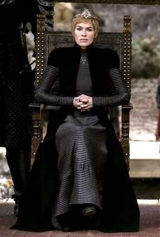
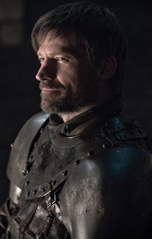
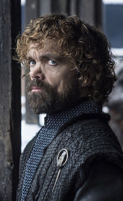

Queen Cersei I Lannister is the widow of King Robert Baratheon, with whom she had her sole trueborn child, and Queen of the Seven Kingdoms. She is the daughter of Lord Tywin Lannister, twin sister of Jaime Lannister and elder sister of Tyrion Lannister. She had an incestuous relationship with Jaime, who is secretly the father of her three bastard children, Joffrey, Myrcella and Tommen.

Ser Jaime Lannister is the eldest son of Tywin, younger twin brother of Cersei, and older brother of Tyrion Lannister. He was involved in an incestuous relationship with Cersei, and unknown to most, he is the biological father of her three children, Joffrey, Myrcella, and Tommen.

Lord Tyrion Lannister is the youngest child of Lord Tywin Lannister and younger brother of Cersei and Jaime Lannister. A dwarf, he uses his wit and intellect to overcome the prejudice he faces.